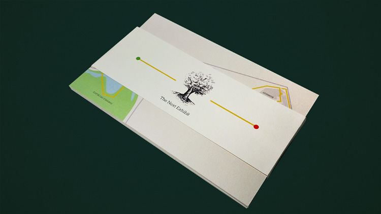

Hey there.
I'm a graphic designer, & I love it!
What I've made
Wayfinding Map
We were given the task to design and execute a map route from the Museum of Fine Arts to MassArt's President Gallery. Assignment for Joseph Quakenbush's Information Architecture I Course. Student work for Massachusetts College of Art & Design.

Process Booklets
To stand in for all of the process required to produce our work, we were asked to design a series of process booklets. Each highlights an individual project, and features moments in critical development of our work. Assignment for Lynn Faitelson's Typography II course
Student work for Massachusetts College of Art & Design.

Lemon Recipe Cards
Given a packet of lemon-themed recipes, we were asked to design ten recipe cards and complementary packaging. I explored stamping and scanning lemons as a means of expressing the lemon-themed project. Assignment for Lynn Faitelson's Typography II course
Student work for Massachusetts College of Art & Design.

The Elements of Style
We were asked to redesign the book: The Elements of Style by William Strunk Jr. and E. B. White—A grammar book. Assignment for Lynn Faitelson's Typography II course. Student work for Massachusetts College of Art & Design.

Sketchbooks
I explore freely in my sketchbooks, acquiring a variety of marks, stamps, organic forms, and anything else I can collect as a form of inspiration.